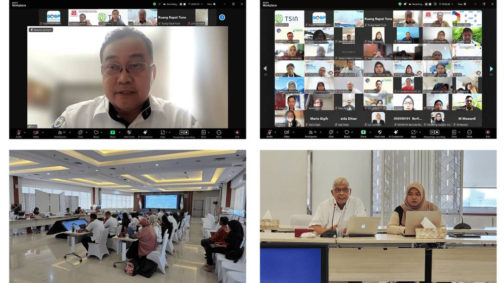

Penguatan Industri Rumput Laut Indonesia: FGD Kedua Dukung Penyusunan Roadmap Rumput Laut Nasional

Jakarta, 5 Mei 2025 — Dalam upaya berkelanjutan untuk memperkuat sektor rumput laut nasional, Kementerian Kelautan dan Perikanan (KKP) melalui Tropical Seaweed Innovation Network (TSIN) di bawah Direktorat Jenderal Penguatan Daya Saing Produk Kelautan dan Perikanan (DJPDS), menyelenggarakan seri kedua Focus Group Discussion (FGD) guna mendukung penyusunan Roadmap Rumput Laut sebagai bagian dari Rencana Pembangunan Jangka Menengah Nasional (RPJMN) 2025–2029.
Kegiatan ini diselenggarakan atas kerja sama dengan United Nations Industrial Development Organization (UNIDO) melalui program Global Quality and Standards Programme (GQSP) Indonesia, dan berlangsung secara hybrid di Ruang Tuna, Gedung Mina Bahari IV, Kantor Pusat KKP, Jakarta. Lebih dari 271 pemangku kepentingan hadir dalam diskusi ini, yang mencakup perwakilan dari instansi pemerintah, asosiasi industri, akademisi, dan pelaku usaha, mencerminkan komitmen bersama dalam mendorong kemajuan sektor rumput laut nasional.
Mengusung tema “Memperkuat Existing Industry Agar dan Karaginan Serta Hilirisasi Lanjutan,” FGD ini menjadi wadah dialog mendalam untuk meningkatkan daya saing dan keberlanjutan industri rumput laut Indonesia, khususnya pada segmen hilir seperti agar dan karagenan, dua produk turunan rumput laut dengan nilai tinggi di pasar global. Diskusi juga mencakup potensi inovasi dan diversifikasi produk.

Beberapa narasumber utama yang turut memberikan pandangan dalam diskusi ini antara lain:
- Bapak Mursalim, Sekretaris Jenderal Asosiasi Rumput Laut Indonesia (ARLI)
- Bapak Mc Donny W. Nagasan, Ketua Umum Asosiasi Pengolah Rumput Laut Indonesia (ASTRULI)
- Dr. Ellya Sinurat, Peneliti dari Badan Riset dan Inovasi Nasional (BRIN)
Hasil dan masukan dari FGD ini akan menjadi bahan penting dalam penyusunan bagian rumput laut pada RPJMN 2025–2029. Inisiatif ini merupakan bagian dari visi yang lebih luas untuk membangun industri rumput laut Indonesia yang inklusif, berorientasi inovasi, dan memiliki nilai tambah tinggi, serta memberikan manfaat nyata bagi masyarakat pesisir.
Penyusunan Roadmap Rumput Laut ini akan terus melibatkan kontribusi berbagai pemangku kepentingan di tingkat nasional dan daerah, guna mewujudkan pertumbuhan sektor yang berkelanjutan dan meningkatkan daya saing Indonesia di pasar global.